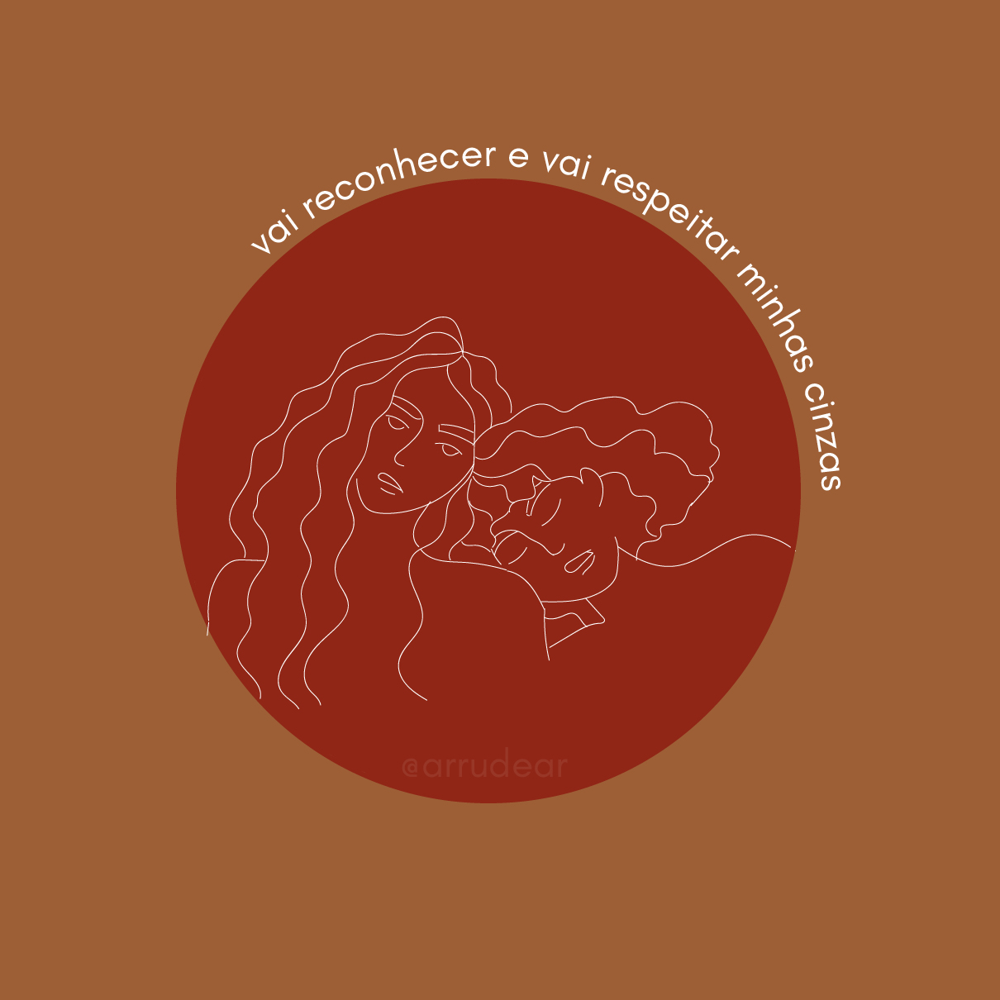

Post #1
8 DE MARÇO - Dia Internacional da Mulher cis, trans e tantas outras feminilidades que também sentem as violências e violações do patriarcado. Dia 8 de março é dia de luta, e dia de luto por aquelas que foram antes de nós. Continuemos um passo a cada dia, tentando encontrar o nosso ponto de equilíbrio em meio a tanto caos, não esqueçam vocês não estão sozinhas. A arte do post de hoje vem acompanhada de uma frase que faz parte da música Mulamba, que a gente permaneça na luta! Dia lindo e muita força!